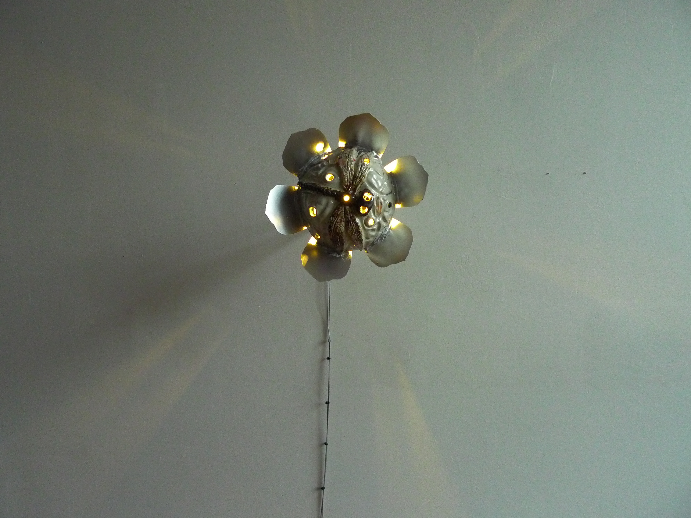

Where does Bushwick begin? Has Bushwick as a center for art galleries begun to fade? Do the endless waves of gentrification ensure that Bushwick will grow as a hot spot for art?
Along the border of the East Williamsburg (cough... Bushwick) Industrial Park and Bushwick, there's a lot of movement in the art world. The neighborhood is home to large galleries such as Luhring Augustine and Clearing, yet it remains a haven for artist-run spaces like ZXY Gallery.
That is not to mention other artist run spaces deeper in Bushwick such as Underdonk, Paradice Palase Tiger Strikes Asteroid and Mery Gates. On the other hand, galleries have leftt and moved to neighborhoods that they may even say are upgrades in terms of foot traffic, density of nearby art galleries, closeness to collectors, etc.
Another consideration is the neighborhoods status as a place for artists to live. While Bushwick may not have the same quantity of galleries, it does seem to attract more artists than Chelsea or the LES with its more affordable rent prices for apartments and studios.